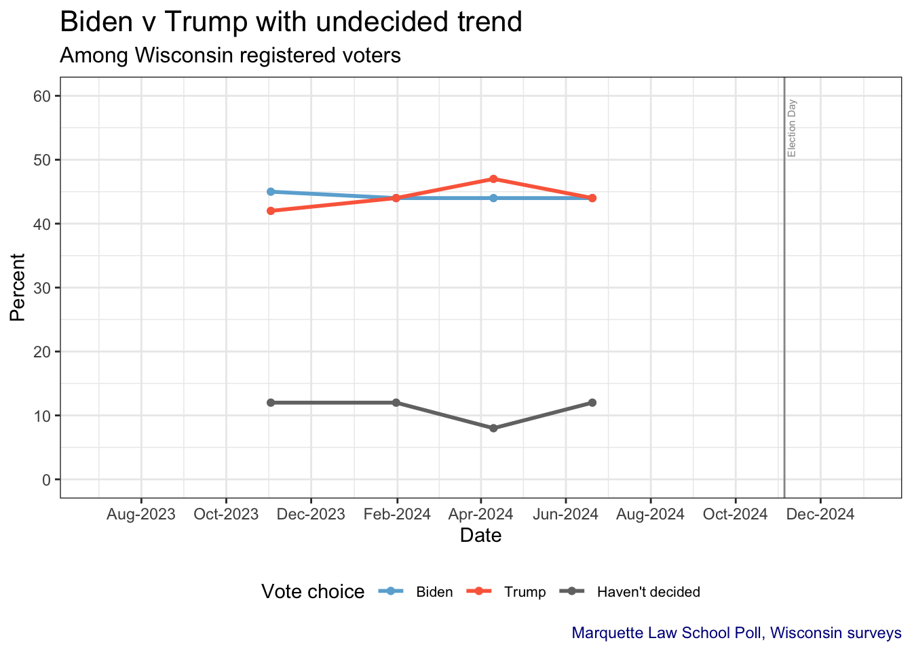
3 Public Opinion and the 2024 Elections in Wisconsin
4 The 2024 horserace, so far
4.1 Head-to-head with undecided
The presidential horserace has shifted only modestly since November 2023. Results here are for registered voters. The vote question is asked in two steps, with the first offering “undecided” as an option. This is followed by asking those who are undecided how they would vote if they had to choose. Including undecided is useful for measuring how many voters may be up for grabs, while the second which includes “leaners” may better capture the inclinations of the undecided.
The presidential races has fluctuated from slight leads for each candidate to ties. The percent undecided has remained around 10%.
4.2 Head-to-head with leaned vote
The leaned vote includes initially undecided voters who are then asked how they would vote if they had to choose. Less than 1% continue to say they are undecided.
The leaned vote has also remained very close, with each candidate leading in one poll and with two ties.
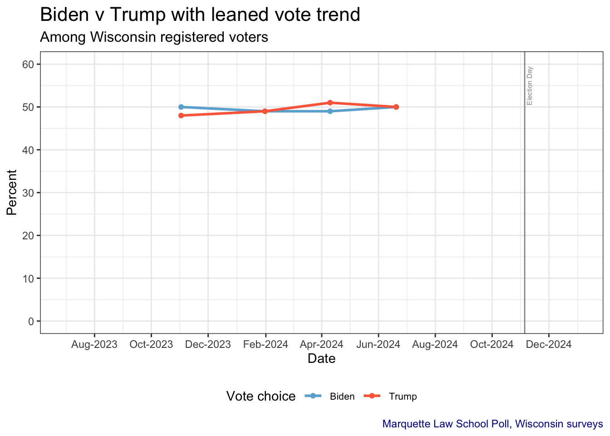
4.3 Multi-candidate vote choice
The multi-candidate vote includes options for Robert F. Kennedy, Jr., Libertarian Chase Oliver, Green Party candidate Jill Stein, and independent Cornel West. Oliver was added in the June 2024 survey. Ballot status of Kennedy and West have not yet been determined in Wisconsin.
Trump has held small leads in each survey asking the multi-candidate vote question. The Kennedy vote has steadily declined since January while the other independent and third-party candidates have fluctuated in low-single digits.

5 Favorability ratings
The question asked is
“Do you have a favorable or unfavorable opinion of
or haven’t you heard enough about (him/her) yet?”
The trend of favorability is shown in chart form in the next section, with the subsequent Data Tables section giving the percentages for each poll that included the candidate’s name.
5.1 Biden favorability
This analysis excludes the period when Biden was Vice-President.
Biden’s favorability declined in the early primary season of 2019-2020 before rising as he prevailed in primaries and through the 2020 election day.
Once in office his favorability has declined and unfavorability has increased. Since June 2023 favorable and unfavorable opinion has further diverged. Except for the summer of 2021, Biden’s unfavorable rating has remined higher than his favorable rating since taking office.
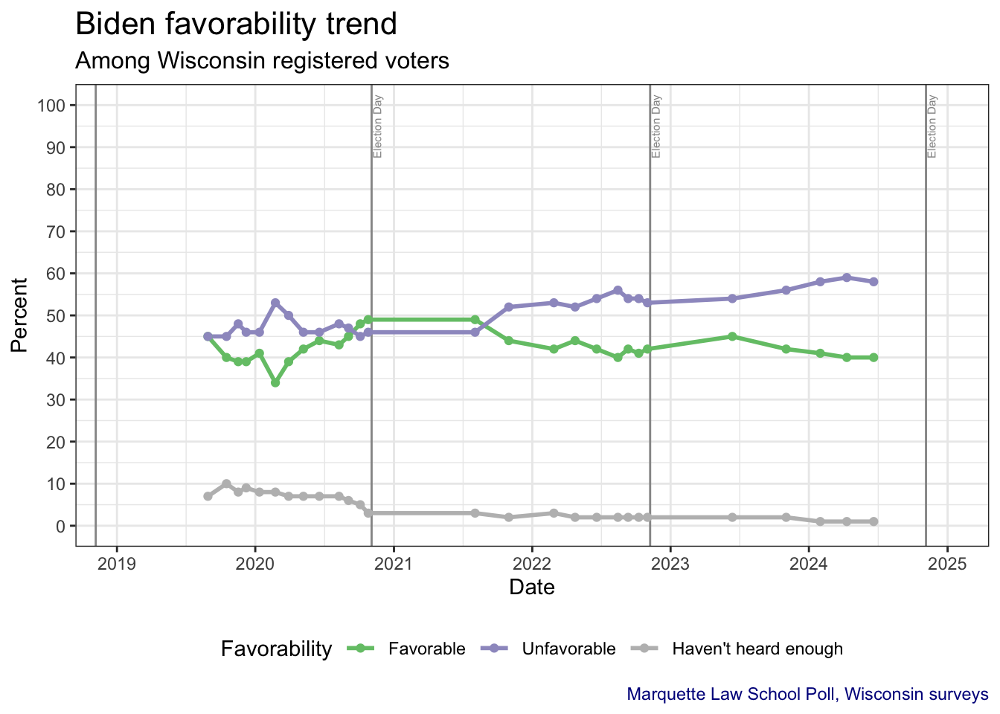
5.1.1 Biden net favorability
Biden’s net favorability has declined since the summer of 2021, held relatively steady in 2022 to summer of 2023 and declined since. Since the summer of 2021 his net favorability has remained negative.
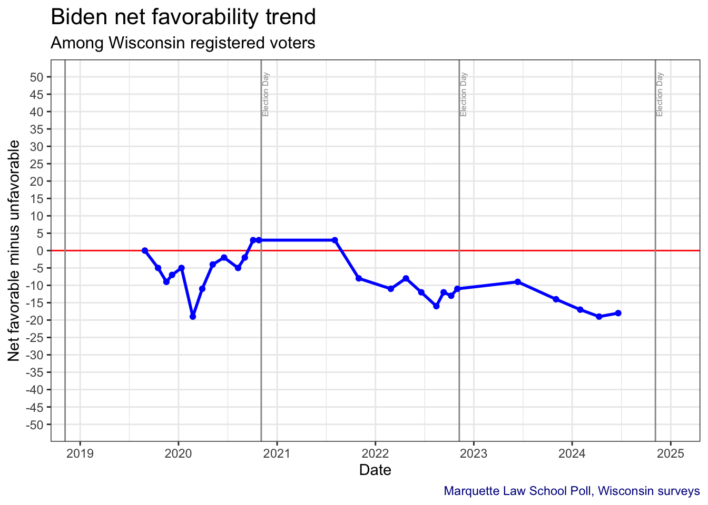
Favorability by party identification shows Biden retains strong support among Democrats, some 5 percentage points below his peak just before the 2020 election. In recent months there has been a small rise among Democrats. (Throughout this report partisans include independents who say they feel closer to a party. Independents are those who do not feel closer to either party.)
Biden’s favorability with independents has generally declined since late October 2020, but has gyrated in 2023 and 2024, with decline in the last polls.
Republican favorabilty to Biden is quite low, hovering around 10% before the 2020 election are remaining around 5% since late 2022.
5.1.2 Biden favorability by party identification
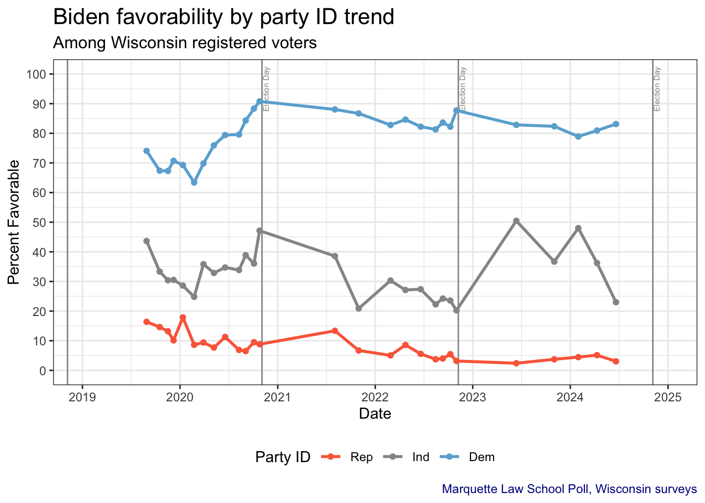
5.2 Trump favorability
Trump’s favorability in Wisconsin was quite low in 2015 through the summer of 2016, rising in the fall to election day. During his presidency favorability rose from the campaign period and fluctuated in a narrow range through the 2020 election. In the period since he left office favorable ratings declined from the level when he was in office, but have increased since June 2023. His unfavorable ratings have always been higher than his favorable ones.
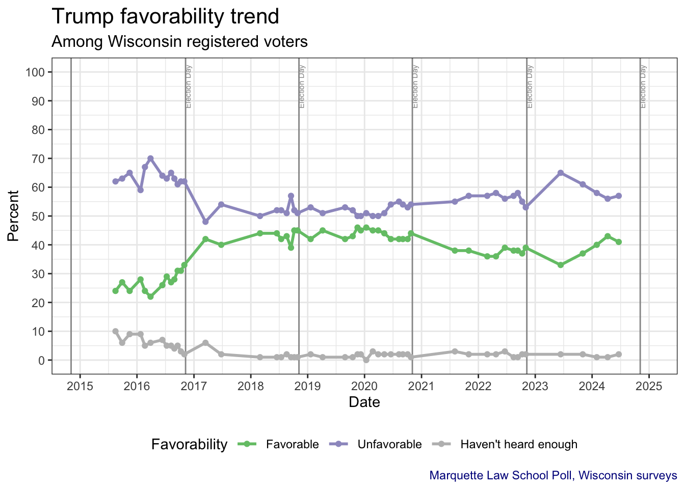
5.2.1 Trump net favorability
Trump’s net favorability has remained negative since he entered the presidential race in 2015, with less negative ratings while in office and lower ratings since taking office. His net rating has become less negative since June 2023.
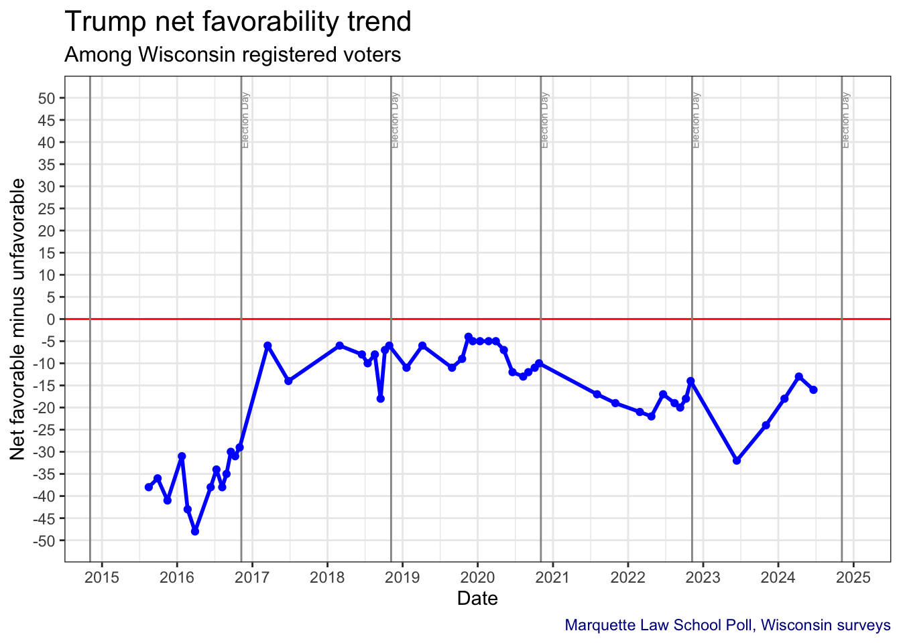
5.2.2 Trump favorability by party identification
Republicans in Wisconsin were initially not very favorable to Trump in 2015 to spring of 2016, when he lost the Republican primary to Texas Senator Ted Cruz. However, his favorability rose once he secured the nomination, climbing through the November election. Once in office his ratings with Republicans rose to between 80% and 90% where they remained throughout his term in office.
Republican favorability to Trump fell some 15 percentage points once he left office, remaining around 70% until the 2024 primary season when his rating rose to just over 80%.
Favorability among independents remained quite low through the 2016 campaign, rising to the mid-30% range through most of his administration, then falling after he left office. Since June 2023 favorability among independents has been varied quite a bit though has generally increased since June 2023.
Democratic favorability toward Trump has remained below 10% with just 3 exceptions since 2015, and has held around 5% since 2019.
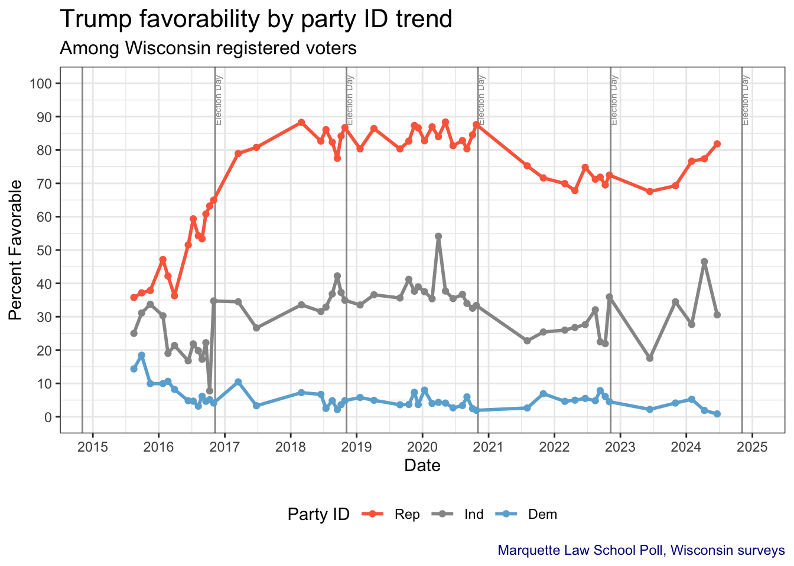
5.3 Kennedy favorability
Favorability to Kennedy has declined in recent surveys. Unlike Biden or Trump a substantial percentage say they don’t know enough about Kennedy to have an opinion, now around 25%. Unfavorable opinion has increased since February 2024 while favorable views have declined.
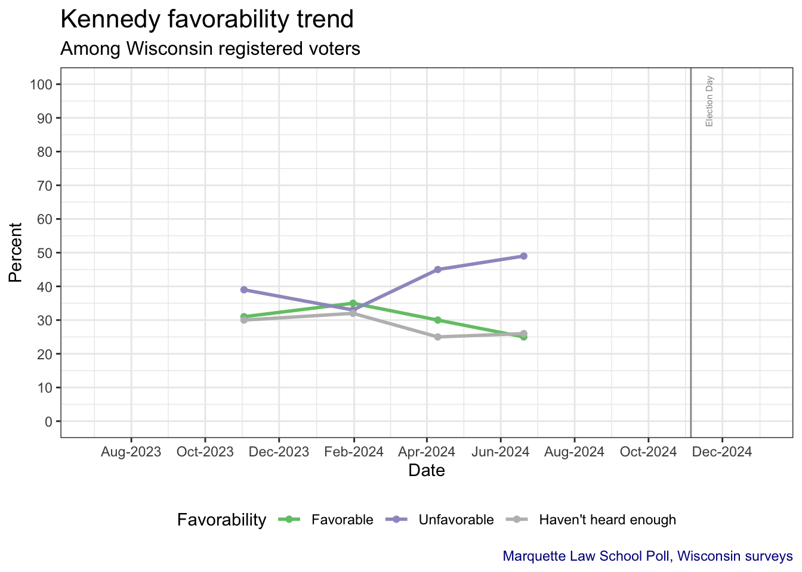
5.3.1 Kennedy net favorability
Kennedy’s net favorable rating peaked in the February 2024 survey at slightly positive but it has declined into negative territory since.
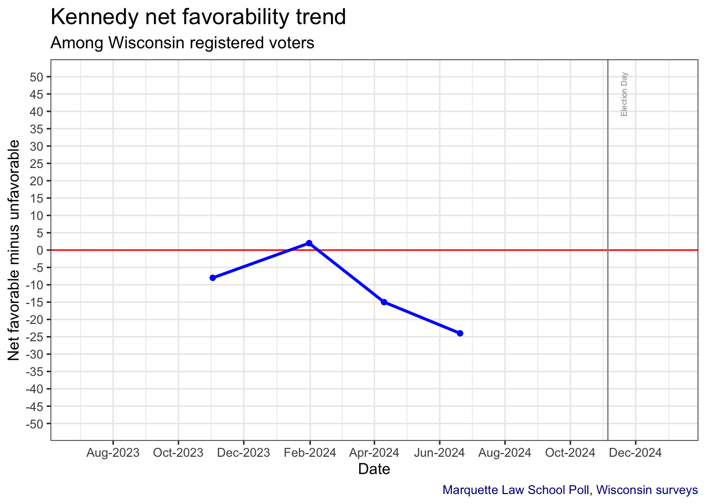
5.3.2 Kennedy favorability by party identification
Republicans have been and remain the partisan group most favorable to Kennedy, though this has been declining steadily since November 2023. Independent favorability has similarly declined since January. Democrats have remained the group with the least favorable views of Kennedy, declining a bit since January.
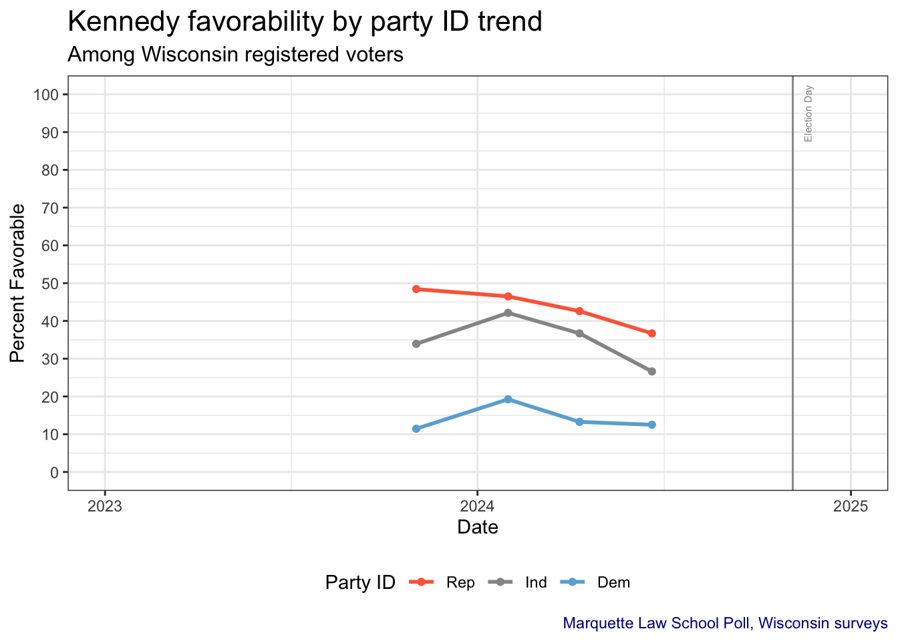
6 Presidential job approval
6.1 Biden job approval
The question asked is
Overall, do you approve or disapprove of the way Joe Biden is handling his job as president?
In the summer of 2021 Biden registered his only poll with higher approval than disapproval. Since then disapproval has remained higher than approval. While relatively stable in 2022-2023, his approval has declined since June 2023.
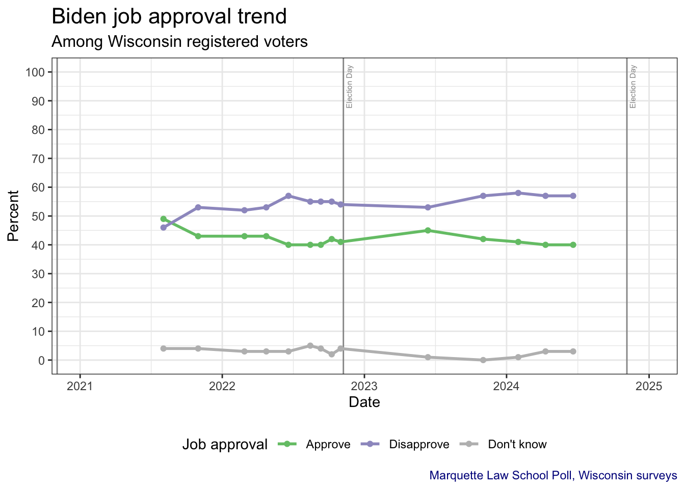
6.1.1 Biden job approval by party identification
Democrats have maintained approval above 80% throughout Biden’s administration, with very little trend up or down.
Approval among independents fell after the summer of 2021 and has fluctuated around 30%, with brief dips to below 20%. After rebounding into the 30s in 2023 and January 2024, approval has fallen with independents.
Republican approval of Biden has remained below 10% throughout his time in office, typically around 5%.
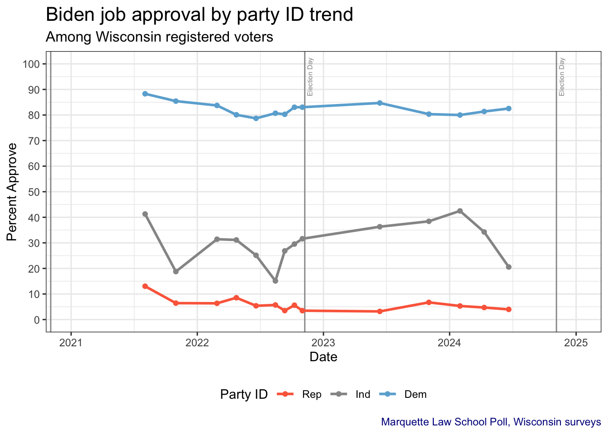
6.2 Trump job approval
The question asked during his time in office is:
Overall, do you approve or disapprove of the way Donald Trump is handling his job as president?
Disapproval of Trump remained higher than approval throughout his time in office, with one poll in which approval and disapproval were equal, early in the Covid pandemic spring.
Beginning in April 2024, respondents are asked how much they approve or disapprove of the job Trump did as president while he was in office. As of June 2024, 47% approved and 52% disapproved of Trump’s handling of his job when in office. In the late October 2020 MULawPoll Trump’s approval was 47% and his disapproval was 52%.
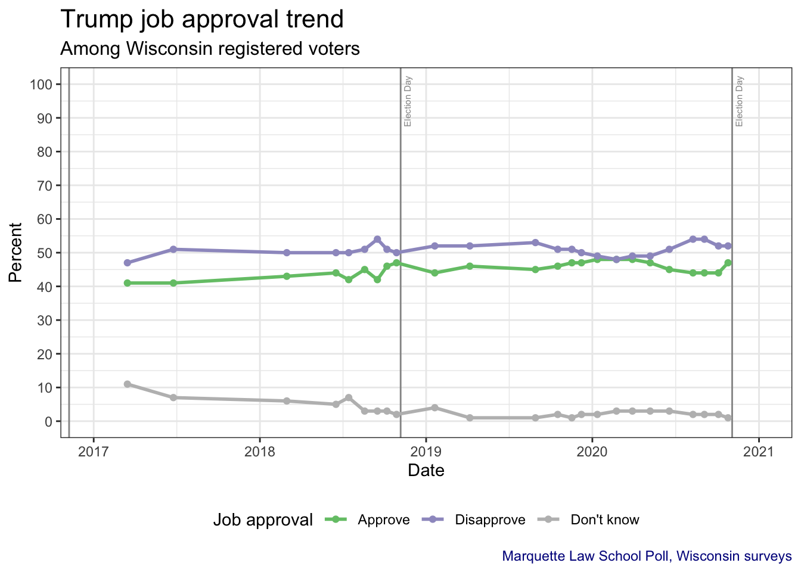
6.2.1 Trump job approval by party identification
While in office Trump’s approval among Republicans remained between 80% and 90%. Independent approval remained mostly in the 30s, though over 40% at times in 2020. Democratic approval remained below 10% thoughout his term.
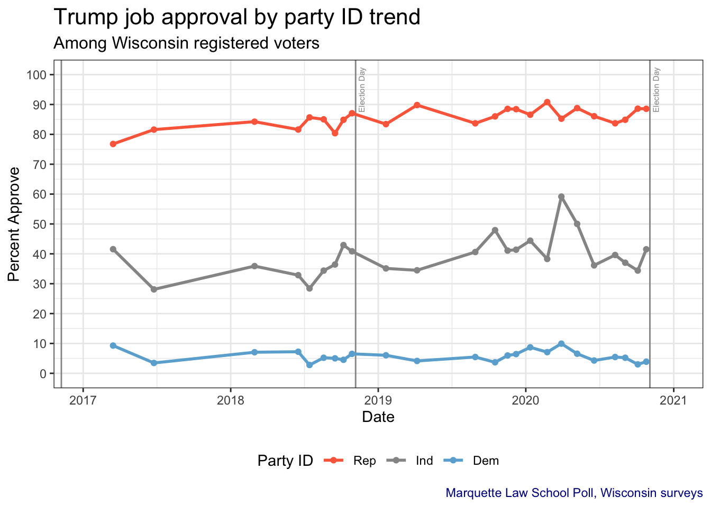
7 Candidate traits
How candidates are perceived plays a substantial role in elections. Both Biden and Trump have relative strengths and weaknesses. Over polling since November 2023 the perceived traits of Biden and Trump have been relatively stable.
Respondents are asked:
How well does each of the following phrases describe (Joe Biden)(Donald Trump)?”
Majorities say both Trump and Biden are “to old to be president” but with substantially more saying this describes Biden very or somewhat well.
Over 60% say “has behaved corruptly” describes Trump, with over 40% saying this describes Biden.
A majority say Trump has a strong record of accomplishments as president, while a little over 40% say this of Biden.
A majority say Biden has the right temperament to be president while barely 40% say this describes Trump.
There is little difference between the candidates on “shares my values”, where around 45% say this describes each candidate.
The chart below shows these trait perceptions combining all polls since November 2023.
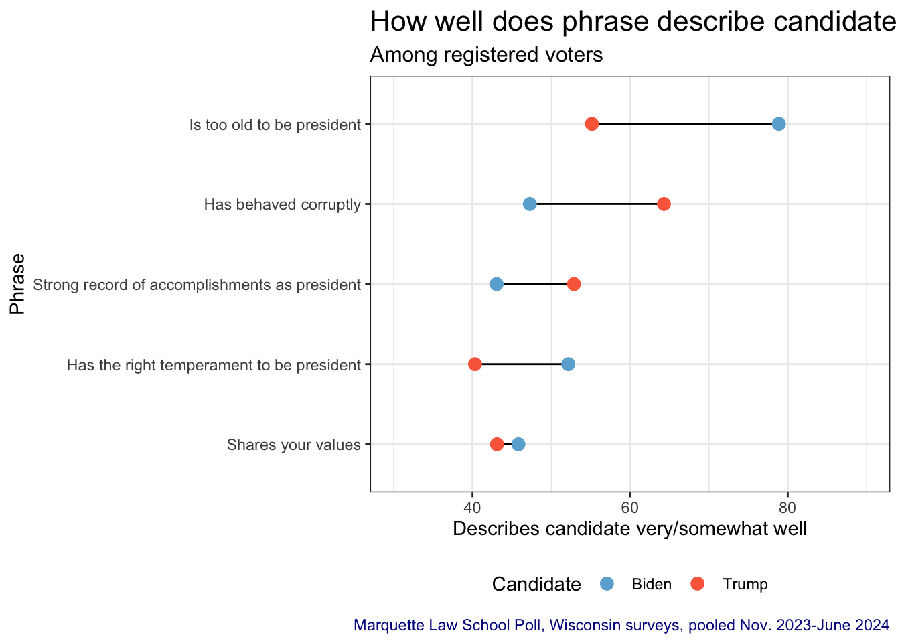
The chart shows the trend in trait perceptions since November 2023. There has been modest movement, though the relative ordering of the candidates has been consistent.
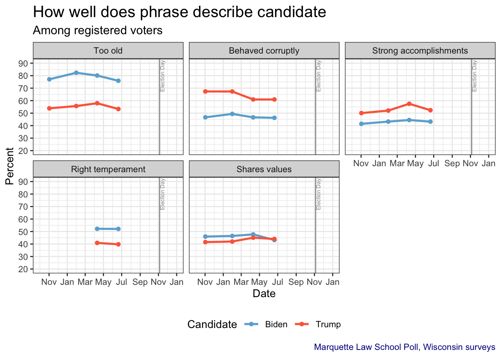
7.1 Vote by party and traits
Partisans are extremely likely to see their party’s candidate in a positive light and the opposition candidate in a negative light. To see the effect of the trait on vote choice it is important to look within each party to see how traits affect vote among each partisan group.
7.1.1 Has strong record of accomplishments as president
Having a strong record boosts vote intention in each partisan group. Those seeing Biden as having strong accomplishments are less likely to vote for Trump (and more likely to vote for Biden) those those who do not think he has accomplishments. Similarly, those thinking Trump has strong accomplishments are much more likely to vote for him (and not for Biden) within each partisan group.
This is very much as common sense would suggest.
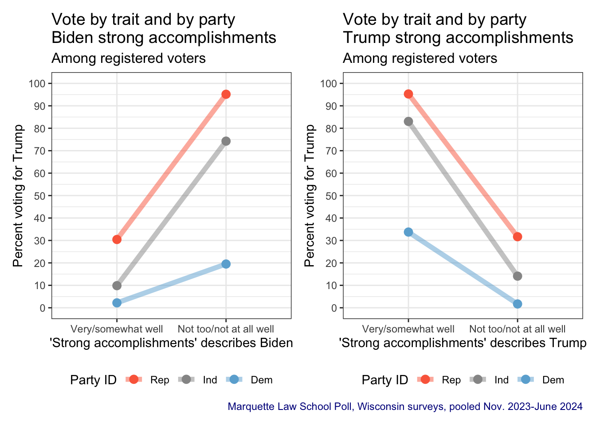
7.1.2 Is too old to be president
Biden’s age has been a prominent issue throughout the campaign, exacerbated by his June debate performance.
In MULawPoll polling here, all before the debate, it is surprising how little perceptions that Biden is too old to be president affect vote. Those saying he is too old are only slightly more likely to vote for Trump than those who say “too old” does not describe Biden. Independents are only slightly more affected than are partisans.
In contrast, perceptions of Trump as too old to be president are more substantial among Republicans and independents, though there is little difference among Democrats.
While 76% of respondents in the June 2024 poll said “too old to be president” describes Biden very or somewhat well, it does not appear to affect their vote very much, regardless of partisan category.
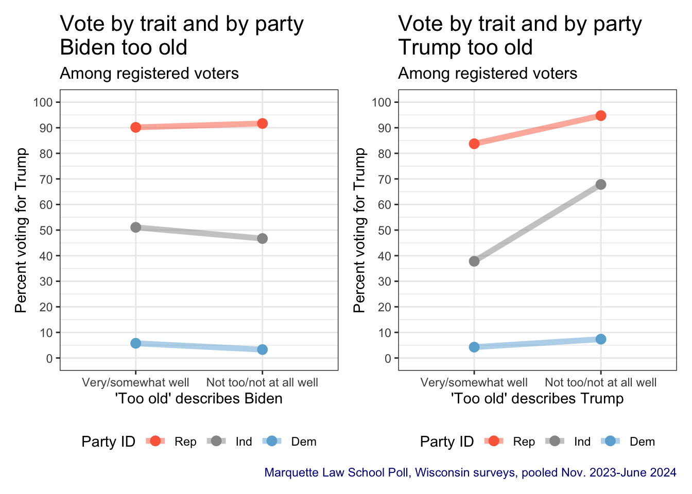
7.1.3 Has behaved corruptly
Unlike age for Biden, perceptions of “has behaved corruptly” affect both Biden and Trump’s vote across partisan categories. Trump’s vote is higher in all partisan categories if Biden is seen to have behaved corruptly, and Trump’s vote is lower among Republicans and independents who say Trump has behaved corruptly. Democrat’s support for Trump remains very low regardless of this perception.
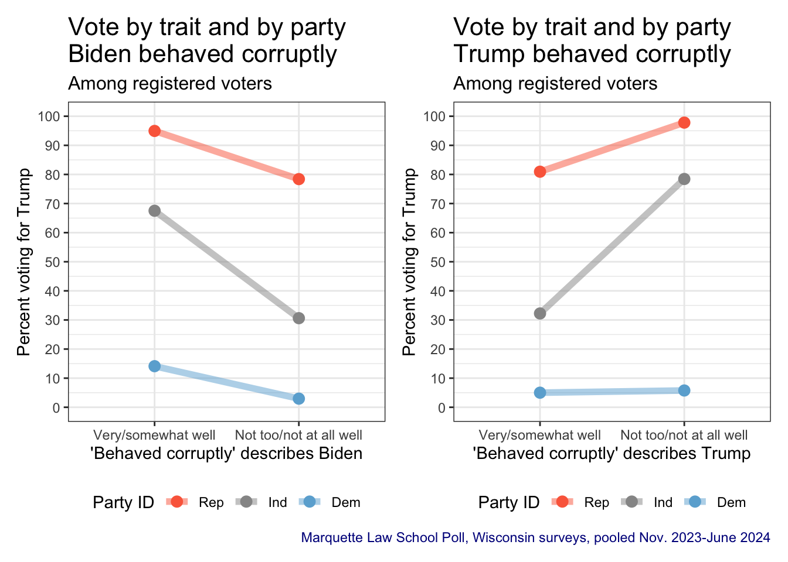
7.1.4 Has right temperament to be president
Having the right temperament to be president boosts support for each candidate across all partisan groups.
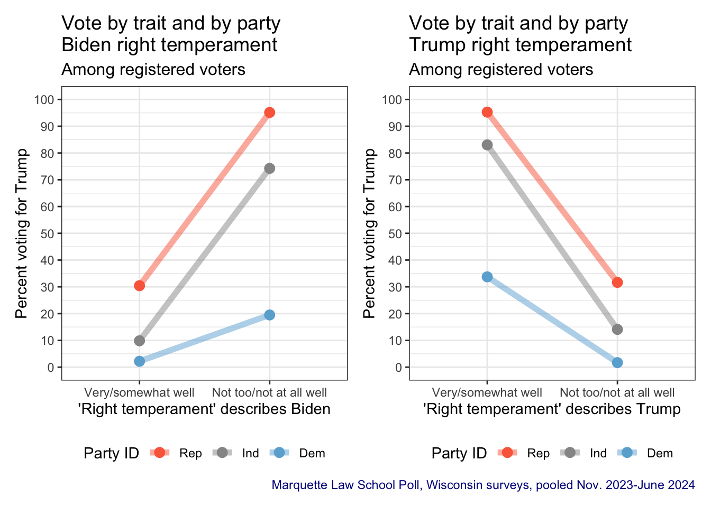
8 Issues
8.1 Which candidate better on issues
Across seven issues Trump is seen as better by a wide margin on three issues, one issue has a slight Trump advantage, and three issues has modest Biden advantages.
It is striking that between 15% and 25% say they don’t see a difference between the candidates (either “both about the same” or “neither good”.)
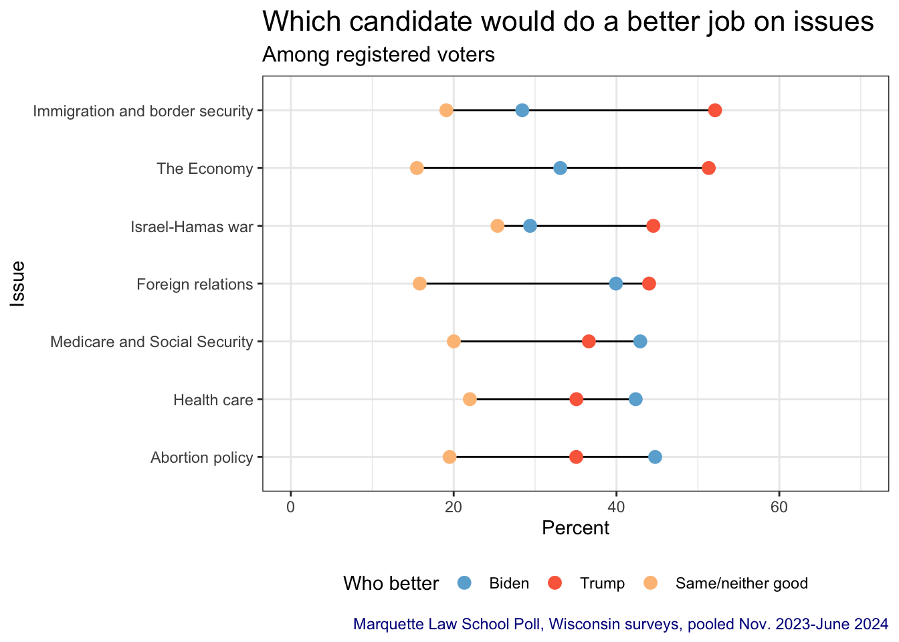
8.2 Who better on issues trend
There have been only small trends in perceptions of which candidate would better handle each issue, and no change in candidate orders since November 2023. There has also been little decline in the percentage seeing no difference between the candidates, something we might expect the campaign to affect.
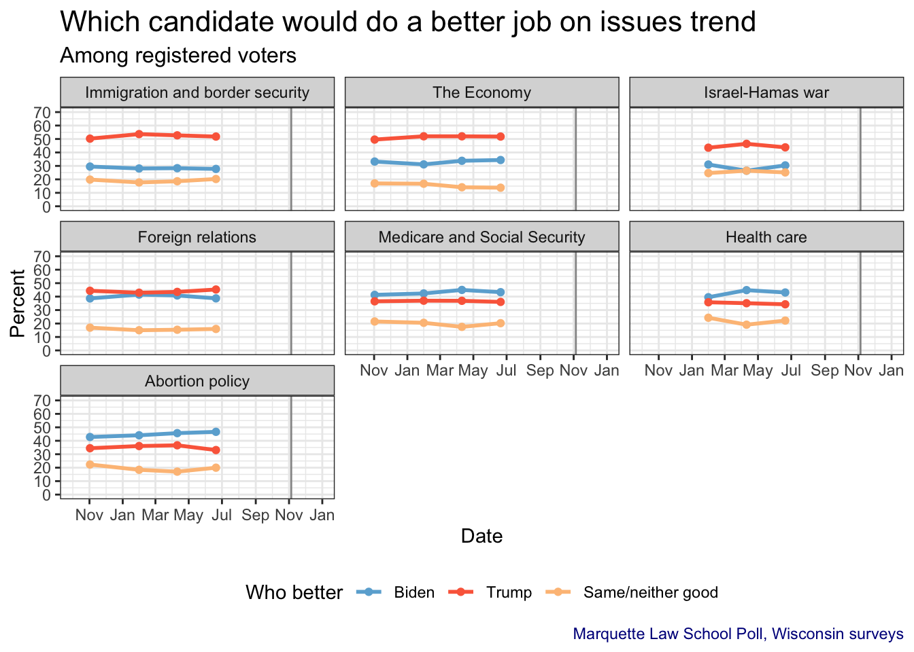
9 Most important issue
Across the seven issues, the economy stands out as the issue over 30% of people say will be the most important in deciding their vote for president. The second most important issue is immigration and border security, cited as most important by about 20%. About 14% say abortion policy is the most important issue for them, and about 12% say Medicare and Social Security is the most important issue. Other issues are in low-single digits, with just over 5% citing health care and foreign relations, while under 5% say the war between Israel and Hamas in Gaza is their most important issue.
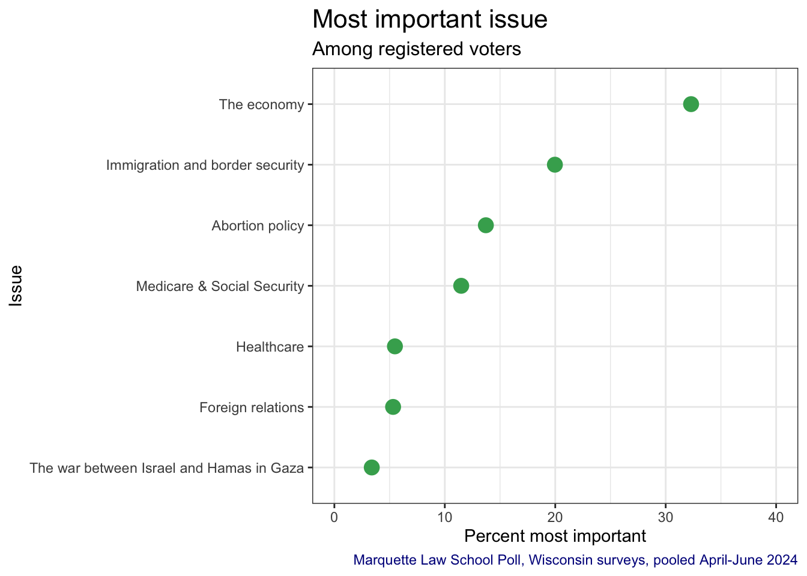
9.1 Most important issue by party identification
Partisans differ sharply over which issue is most important to them. Among Republicans, the economy followed by immigration tower above all other issues, each of which is below 10% for Republicans.
In sharp contrast, Wisconsin Democrats rate abortion police as most important, followed by Medicare and Social Security with the economy a close third in importance. Unlike Republicans who rate immigration second highest, less than 5% of Democrats rate immigration most important.
Independents rate the economy and immigration as first and second most important, though not as highly as do Republicans. Independents put Medicare and Social Security as their third top issue, though well below immigration. Independents give abortion policy nearly as low a rating as do Republicans.
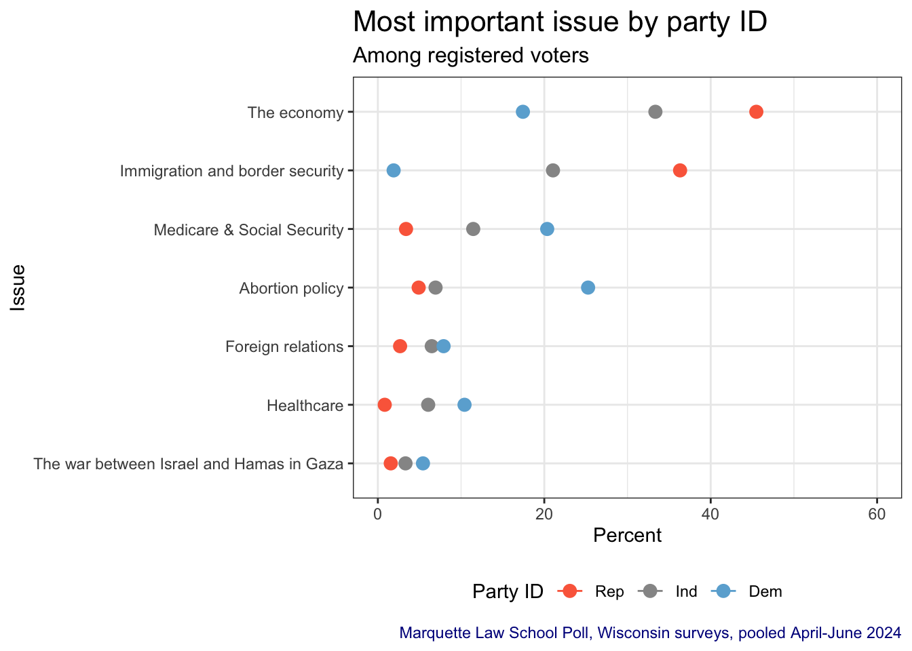
10 U.S. Senate race in Wisconsin
10.1 Senate Head-to-head with undecided
Baldwin holds a moderate lead over Hovde in the Wisconsin U.S. Senate race, with a substantial 17% or 18% undecided in April and June. There has been little change in the race between April and June.

10.2 Senate Head-to-head with leaned vote
The leaned vote includes initially undecided voters who are then asked how they would vote if they had to choose. Less than 1% continue to say they are undecided.
The leaned vote shows a similar advantage for Baldwin as does the unleaned vote, and also shows no shift from April to June.
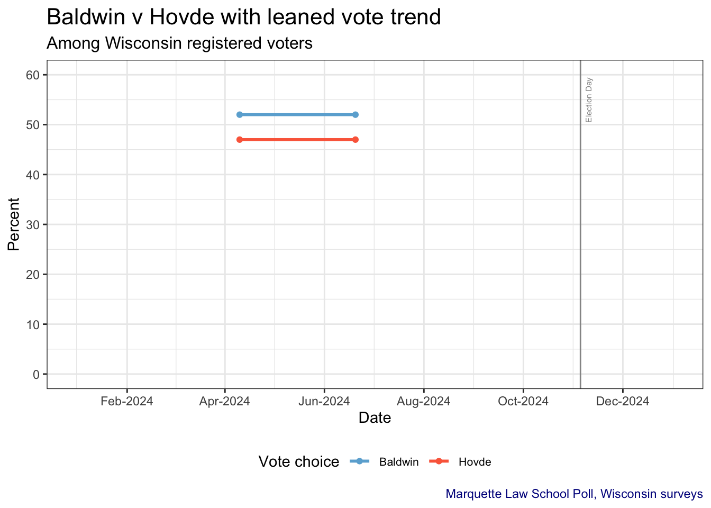
10.3 Split-ticket votes for president and senate with undecided
While Baldwin holds a 7 point lead in June (using the vote with undecided included), Biden and Trump are tied in the June vote with undecided included.
There is a modest amount of split-ticket voting between the presidential and senate races, slightly favoring Baldwin. About twice as many Trump voters are undecided in the senate race than are Biden voters, and almost 40% of undecided presidential voters are also undecided in the senate race.
| President and Senate split-tickets with undecided | |||
|---|---|---|---|
| Among Wisconsin registered voters | |||
| President vote | Senate vote | ||
| Baldwin | Hovde | Haven't decided | |
| Biden | 87 | 3 | 10 |
| Trump | 7 | 73 | 20 |
| Haven't decided | 31 | 29 | 39 |
| Marquette Law School Poll, Wisconsin surveys | |||
| Question: If the 2024 election for president were held today between [President Joe Biden, the Democrat,] and [Former President Donald Trump, the Republican,] would you vote for [Joe Biden] or for [Donald Trump] or haven’t you decided? | |||
| Question: If the 2024 election for U.S. Senate were held today between [Tammy Baldwin, the Democrat,] and [Eric Hovde, the Republican,] would you vote for [Tammy Baldwin], or for [Eric Hovde] or haven’t you decided? | |||
10.4 Split-ticket votes for president and senate with leaned vote
When undecided senate voters are asked who they would pick if they had to choose, the undecided groups disappears. A few more, 14%, of Trump voters say they would vote for Baldwin, and 8% of Biden voters would vote for Hovde.
| President and Senate split-tickets with leaned vote | ||
|---|---|---|
| Among Wisconsin registered voters | ||
| President vote | Senate vote | |
| Baldwin | Hovde | |
| Biden | 91 | 8 |
| Trump | 14 | 85 |
| Marquette Law School Poll, Wisconsin surveys | ||
| Question: If the 2024 election for president were held today between [President Joe Biden, the Democrat,] and [Former President Donald Trump, the Republican,] would you vote for [Joe Biden] or for [Donald Trump] or haven’t you decided? | ||
| Question: If you had to choose, would you vote for [Biden] or for [Trump]? | ||
| Question: If the 2024 election for U.S. Senate were held today between [Tammy Baldwin, the Democrat,] and [Eric Hovde, the Republican,] would you vote for [Tammy Baldwin], or for [Eric Hovde] or haven’t you decided? | ||
| Question: If you had to choose, would you vote for [Baldwin], or for [Hovde]? | ||
11 Senate Favorability ratings
The question asked is
“Do you have a favorable or unfavorable opinion of
or haven’t you heard enough about (him/her) yet?”
The trend of favorability is shown in chart form in the next section, with the subsequent Data Tables section giving the percentages for each poll that included the candidate’s name.
11.1 Baldwin favorability
Baldwin has the longest favorability record in the Marquette Law School poll, having been included in almost every poll since 2012. This provides a career long overview.
In 2012, during the runup to the fall election, Baldwin’s initially high “haven’t heard enough” percentage fell steadily to election day, with favorable and unfavorable rising roughly in parallel through the fall election.In most of these polls her favorable rating was slightly below her unfavorable rating.
Since taking office in 2013, Baldwin’s favorable ratings have generally been a little above her unfavorable ones. During her 2018 reelection campaign favorable ratings rose slightly and unfavorable fell, making her more favorable than unfavorable during the fall 2018 campaign.
Since 2019 Baldwin has been a little more favorable than unfavorable, with a few dips to more unfavorable views.
There is also a noticeable election cycle dynamic to the percentage saying they “haven’t heard enough” to have an opinion. This percentage falls in election years of 2012, 2018 and 2024, but rises between senate elections.
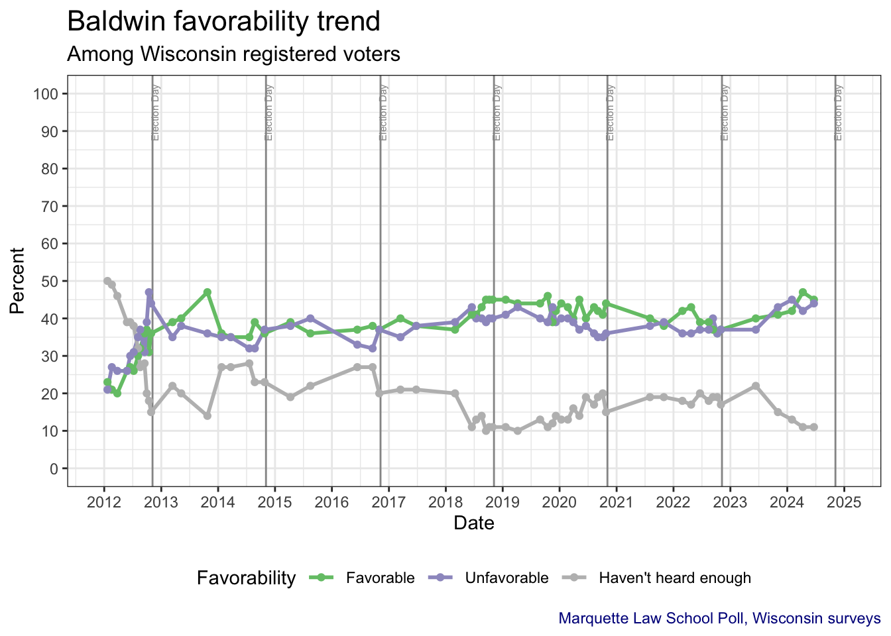
11.1.1 Baldwin net favorability trend
The chart of net favorability makes clear Biden’s generally net positive rating of less than 10 percentage points, though ocassional dips into negative territory.
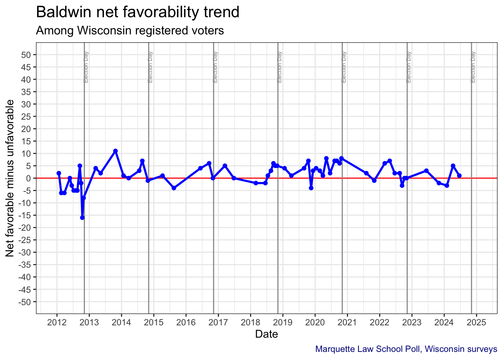
11.1.2 Baldwin favorability by party identification
Democrats are quite favorable to Baldwin, and that support has increased in her second term in the senate compared to the first term.
Independents are less favorable (though also more likely to say they don’t know enough to have an opinion.) Independent favorability is also generally higher in her second term, though more variable.
Republican favorability to Baldwin has held rather steady at about 10%.

11.2 Hovde favorability
Hovde has an unusual favorability history because we have measures of him during his primary campaign for the Republican senate nomination in 2012, a race he narrowly lost. We then pick him up again in June 2023 when he became widely mentioned as a possible 2024 candidate.
Like all new candidates, in 2012 Hovde had a high “haven’t heard enough” rating, not unlike Baldwin at the same time. Like Baldwin, Hovde became better known through the primary campaign, though almost 50% still said they hadn’t heard enough about him by the time of the primary.
During the 2012 primary campaign, Hovde’s favorable and unfavorable ratings both increased, becoming more favorable than unfavorable until the last pre-primary poll.
In the 2024 cycle Hovde is again introducing himself to voters, with those saying “haven’t heard enough” falling from just over 80% in June 2023 to 44% in June 2023.
In the last year, Hovde’s favorable and unfavorable ratings have both increased, with unfavorable rising more than favorable, as of June 2024.
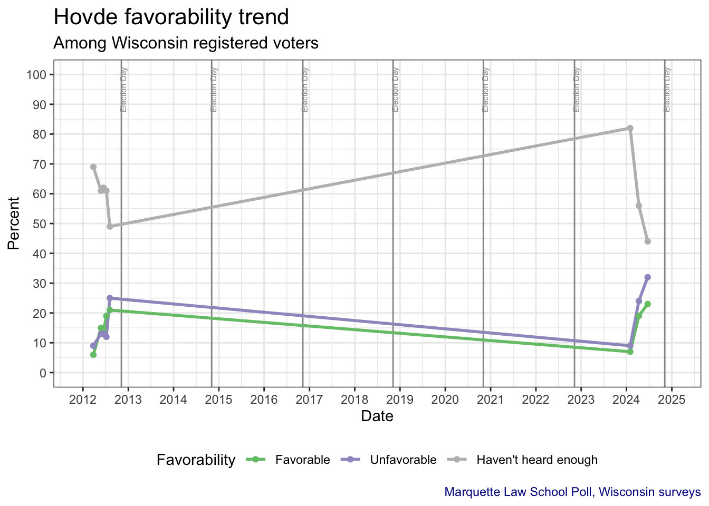
11.2.1 Hovde net favorable rating
Hovde’s net favorability trend clarifies the balance of favorable and unfavorable opinion, but omits the important element of how those without an opinion are changing. That percentage will decline through the campaign.
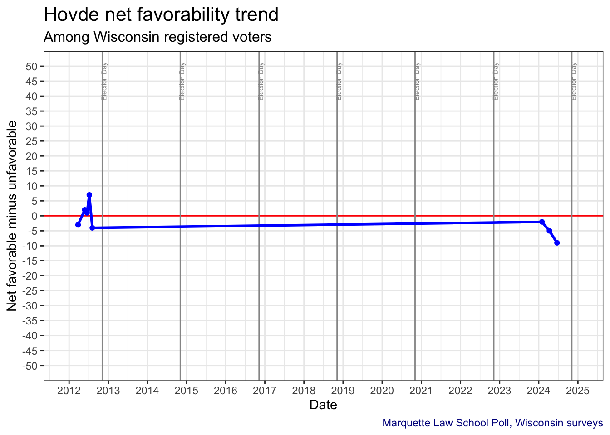
11.2.2 Hovde favorability by party identification
Hovde’s favorability with Republican voters rose substantially in the 2012 primary campaign, and has risen more dramatically in 2023-24.
Favorability among independents has only slightly increased (with many saying they don’t know enough). Democratic favorability has remained very low.
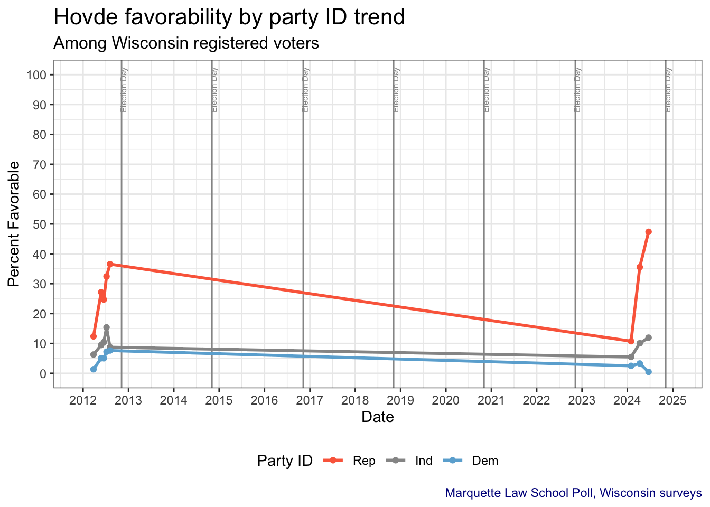
12 Special topics
13 “Double haters”
Those with unfavorable opinions of both Biden and Trump have been a topic of special interest in 2024. This section looks at the prevalence of so called “double haters” in Wisconsin presidential races for 2012, 2016, 2020 and 2024.
As of June 2024, 17% of Wisconsin registered voters are double haters, a share that has been stable since November 2023.
For comparison, in June 2020, 12% were classified as double haters, a number that declined to 5% in late October.
In June of 2016, 26% were double haters, which declined to 20% in late October.
In 2012 there were many fewer double haters, just 4% in June, with the same in late October.
13.1 Vote among double haters
Double haters are far more likely to say they are undecided than are those who like one candidate and not the other. Since November 2023, the double haters have continued to say they are undecided at a 36%-44% rate, while those who express a preference lean slightly to Biden. In contrast to double haters, those who like one candidate and not the other vote for the favored candidate over 95% of the time.
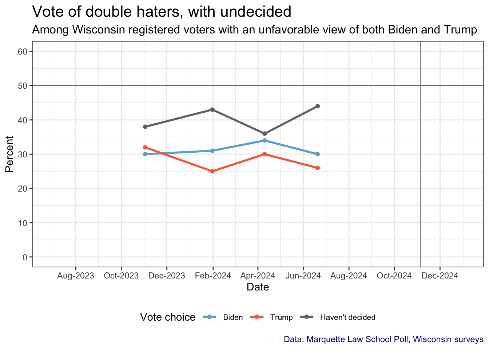
When third party candidates are included, the double haters are quite likely to support one of these alternatives. Kennedy support is especially strong among double haters, but has been declining since January. Biden and Trump remain close, with Trump pulling slightly ahead in June.
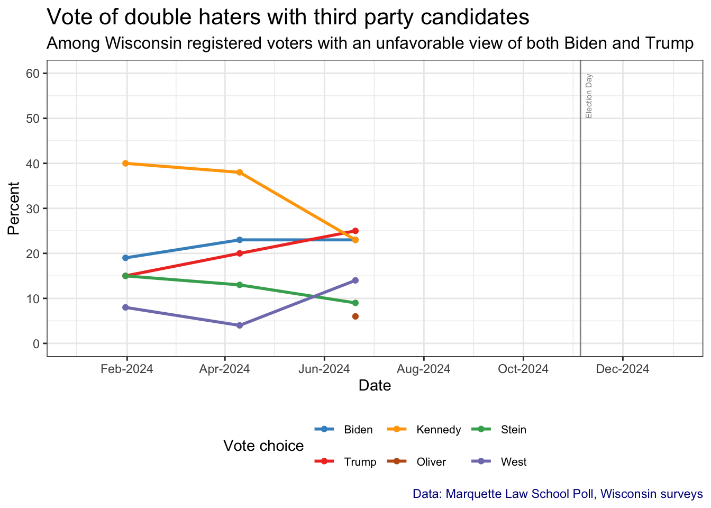
13.2 Biden and Trump double haters
The full trend of Biden and Trump favorability with double haters is shown in the figure below. In 2019 and 2020 double haters made up around 10% of Wisconsin registered voters, peaking at 15% in February 2020 and declining to 5% in October 2020.
In the current election cycle since November 2023, double haters have made up 17% or 18% of registered voters, and has generally been in the mid-teens in 2022 and 2023. That puts the share of double haters well above the 2020 level at this time, and below the level of 2016 opinion as of June, though not much below the end of the 2016 campaign in late October.
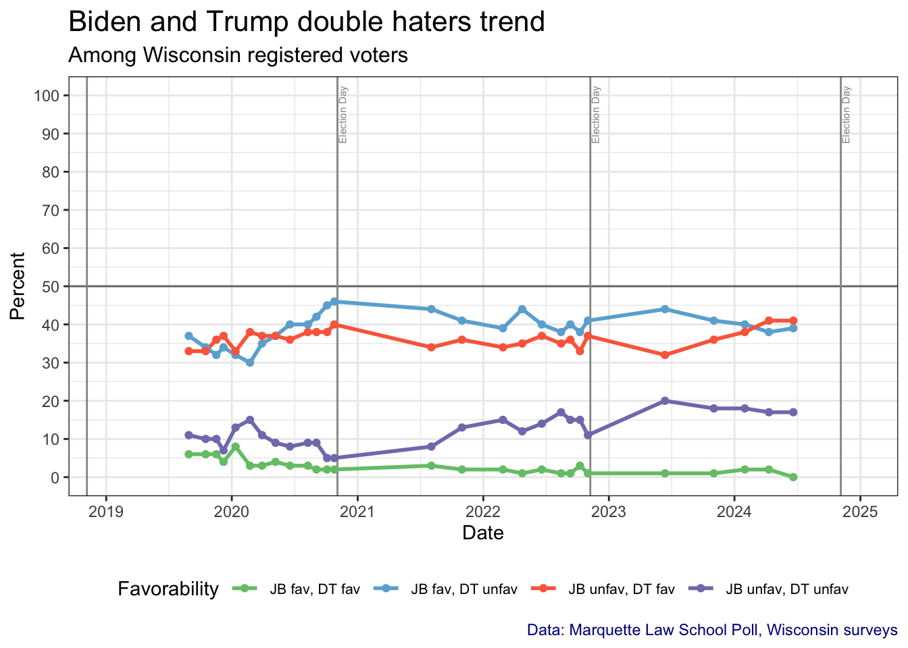
13.3 Clinton and Trump double haters
There were more double haters in 2016 than in 2020 or 2024. Through the early part of the 2016 campaign double haters made up 25%-34% of registered voters. In the last five months of the campaign this declined to 20% at the end of October. This very high level of double haters stands in sharp contrast with the 2012 campaign.
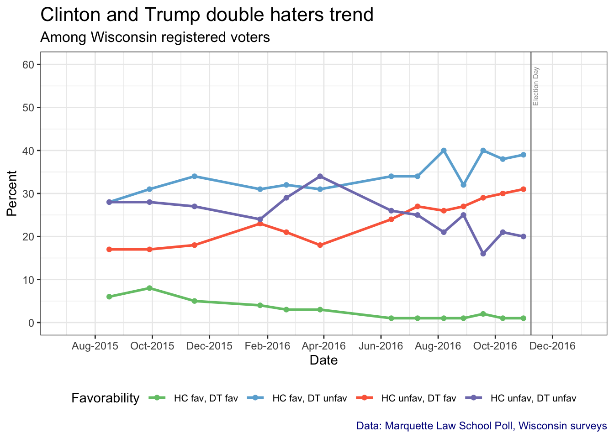
13.4 Obama and Romney double haters
The 2012 campaign produced very few double haters. Early in 2012 as many as 15% disliked both candidates but this steadily declined to just 5% in late October and under 10% throughout the post-primary period.
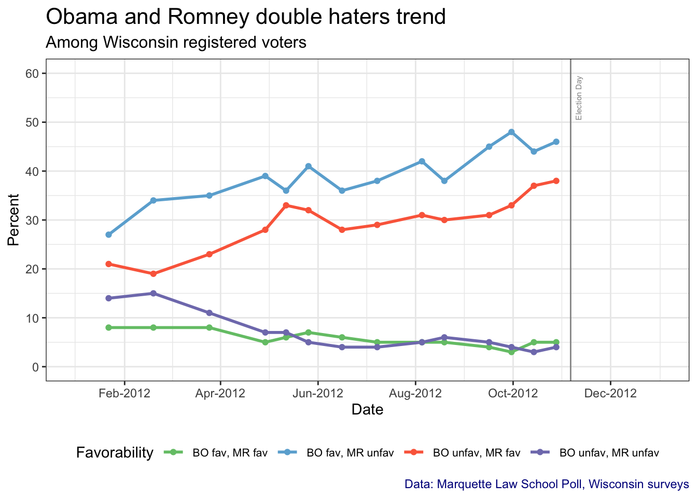
14 Data Tables
14.1 Vote of double haters
| Vote of double haters, with undecided | ||||
|---|---|---|---|---|
| Among Wisconsin registered voters with an unfavorable view of both Biden and Trump | ||||
| Poll dates | Vote | |||
| Biden | Trump | Haven't decided | n | |
| 6/12-20/24 | 30 | 26 | 44 | 148 |
| 4/3-10/24 | 34 | 30 | 36 | 138 |
| 1/24-31/24 | 31 | 25 | 43 | 167 |
| 10/26-11/2/23 | 30 | 32 | 38 | 164 |
| Marquette Law School Poll, Wisconsin surveys | ||||
| Question: Do you have a favorable or unfavorable opinion of (name) or haven’t you heard enough about (him/her) yet? | ||||
| Question: If the 2024 election for president were held today between [President Joe Biden, the Democrat,] and [Former President Donald Trump, the Republican,] would you vote for [Joe Biden] or for [Donald Trump] or haven’t you decided? | ||||
14.2 Vote of double haters with third party candidates
| Vote of double haters with third party candidates | |||||||
|---|---|---|---|---|---|---|---|
| Among Wisconsin registered voters with an unfavorable view of both Biden and Trump | |||||||
| Poll dates | Vote | ||||||
| Biden | Trump | Kennedy | Oliver | Stein | West | n | |
| 6/12-20/24 | 23 | 25 | 23 | 6 | 9 | 14 | 148 |
| 4/3-10/24 | 23 | 20 | 38 | NA | 13 | 4 | 138 |
| 1/24-31/24 | 19 | 15 | 40 | NA | 15 | 8 | 167 |
| Marquette Law School Poll, Wisconsin surveys | |||||||
| Question: Do you have a favorable or unfavorable opinion of (name) or haven’t you heard enough about (him/her) yet? | |||||||
| Question: If the presidential ballot included additional candidates, would you vote for [Democrat Joe Biden], [Republican Donald Trump], [independent Robert F. Kennedy Jr], [Libertarian Chase Oliver], [the Green Party’s Jill Stein], or [independent Cornel West]? | |||||||
14.3 Biden and Trump double haters
| Biden and Trump double haters trend | ||||||
|---|---|---|---|---|---|---|
| Among Wisconsin registered voters | ||||||
| Poll dates | Favorability | |||||
| JB fav, DT fav | JB fav, DT unfav | JB unfav, DT fav | JB unfav, DT unfav | DK/NA | n | |
| 6/12-20/24 | 0 | 39 | 41 | 17 | 3 | 871 |
| 4/3-10/24 | 2 | 38 | 41 | 17 | 2 | 814 |
| 1/24-31/24 | 2 | 40 | 38 | 18 | 2 | 930 |
| 10/26-11/2/23 | 1 | 41 | 36 | 18 | 4 | 908 |
| 6/8-13/23 | 1 | 44 | 32 | 20 | 3 | 913 |
| 10/24-11/1/22 | 1 | 41 | 37 | 11 | 10 | 802 |
| 10/3-9/22 | 3 | 38 | 33 | 15 | 11 | 801 |
| 9/6-11/22 | 1 | 40 | 36 | 15 | 8 | 801 |
| 8/10-15/22 | 1 | 38 | 35 | 17 | 8 | 811 |
| 6/14-20/22 | 2 | 40 | 37 | 14 | 7 | 803 |
| 4/19-24/22 | 1 | 44 | 35 | 12 | 8 | 805 |
| 2/22-27/22 | 2 | 39 | 34 | 15 | 10 | 802 |
| 10/26-31/21 | 2 | 41 | 36 | 13 | 8 | 805 |
| 8/3-8/21 | 3 | 44 | 34 | 8 | 11 | 807 |
| 10/21-25/20 | 2 | 46 | 40 | 5 | 6 | 806 |
| 9/30-10/4/20 | 2 | 45 | 38 | 5 | 9 | 805 |
| 8/30-9/3/20 | 2 | 42 | 38 | 9 | 9 | 802 |
| 8/4-9/20 | 3 | 40 | 38 | 9 | 11 | 801 |
| 6/14-18/20 | 3 | 40 | 36 | 8 | 12 | 805 |
| 5/3-7/20 | 4 | 37 | 37 | 9 | 14 | 811 |
| 3/24-29/20 | 3 | 35 | 37 | 11 | 13 | 813 |
| 2/19-23/20 | 3 | 30 | 38 | 15 | 15 | 1,000 |
| 1/8-12/20 | 8 | 32 | 33 | 13 | 15 | 800 |
| 12/3-8/19 | 4 | 34 | 37 | 7 | 18 | 800 |
| 11/13-17/19 | 6 | 32 | 36 | 10 | 15 | 801 |
| 10/13-17/19 | 6 | 34 | 33 | 10 | 17 | 799 |
| 8/25-29/19 | 6 | 37 | 33 | 11 | 13 | 800 |
| Marquette Law School Poll, Wisconsin surveys | ||||||
| Question: Do you have a favorable or unfavorable opinion of (name) or haven’t you heard enough about (him/her) yet? | ||||||
14.4 Clinton and Trump double haters
| Clinton and Trump double haters trend | ||||||
|---|---|---|---|---|---|---|
| Among Wisconsin registered voters | ||||||
| Poll dates | Favorability | |||||
| HC fav, DT fav | HC fav, DT unfav | HC unfav, DT fav | HC unfav, DT unfav | DK/NA | n | |
| 10/26-31/16 | 1 | 39 | 31 | 20 | 8 | 1,401 |
| 10/6-9/16 | 1 | 38 | 30 | 21 | 10 | 1,000 |
| 9/15-18/16 | 2 | 40 | 29 | 16 | 12 | 802 |
| 8/25-28/16 | 1 | 32 | 27 | 25 | 15 | 803 |
| 8/4-7/16 | 1 | 40 | 26 | 21 | 11 | 805 |
| 7/7-10/16 | 1 | 34 | 27 | 25 | 13 | 801 |
| 6/9-12/16 | 1 | 34 | 24 | 26 | 14 | 800 |
| 3/24-28/16 | 3 | 31 | 18 | 34 | 13 | 1,405 |
| 2/18-21/16 | 3 | 32 | 21 | 29 | 16 | 802 |
| 1/21-24/16 | 4 | 31 | 23 | 24 | 17 | 806 |
| 11/12-15/15 | 5 | 34 | 18 | 27 | 16 | 803 |
| 9/24-28/15 | 8 | 31 | 17 | 28 | 16 | 803 |
| 8/13-16/15 | 6 | 28 | 17 | 28 | 21 | 802 |
| Marquette Law School Poll, Wisconsin surveys | ||||||
| Question: Do you have a favorable or unfavorable opinion of (name) or haven’t you heard enough about (him/her) yet? | ||||||
14.5 Obama and Romney double haters
| Obama and Romney double haters trend | ||||||
|---|---|---|---|---|---|---|
| Among Wisconsin registered voters | ||||||
| Poll dates | Favorability | |||||
| BO fav, MR fav | BO fav, MR unfav | BO unfav, MR fav | BO unfav, MR unfav | DK/NA | n | |
| 10/25-28/12 | 5 | 46 | 38 | 4 | 7 | 1,404 |
| 10/11-14/12 | 5 | 44 | 37 | 3 | 11 | 1,007 |
| 9/27-30/12 | 3 | 48 | 33 | 4 | 12 | 1,003 |
| 9/13-16/12 | 4 | 45 | 31 | 5 | 15 | 705 |
| 8/16-19/12 | 5 | 38 | 30 | 6 | 22 | 706 |
| 8/2-5/12 | 5 | 42 | 31 | 5 | 17 | 1,400 |
| 7/5-8/12 | 5 | 38 | 29 | 4 | 24 | 1,000 |
| 6/13-16/12 | 6 | 36 | 28 | 4 | 25 | 707 |
| 5/23-26/12 | 7 | 41 | 32 | 5 | 15 | 720 |
| 5/9-12/12 | 6 | 36 | 33 | 7 | 18 | 704 |
| 4/26-29/12 | 5 | 39 | 28 | 7 | 22 | 705 |
| 3/22-25/12 | 8 | 35 | 23 | 11 | 22 | 707 |
| 2/16-19/12 | 8 | 34 | 19 | 15 | 25 | 716 |
| 1/19-22/12 | 8 | 27 | 21 | 14 | 30 | 701 |
| Marquette Law School Poll, Wisconsin surveys | ||||||
| Question: Do you have a favorable or unfavorable opinion of (name) or haven’t you heard enough about (him/her) yet? | ||||||
15 Enthusiasm!
Enthusiasm to vote in the November election is measured by the question:
How enthusiastic are you about voting in the elections in November 2024 for president and other offices? Would you say you are very, somewhat, not too, or not at all enthusiastic?
This is not a measure of enthusiasm for a specific candidate but of enthusiasm to vote.
15.1 Trend in enthusiasm to vote
In 2024 the level of enthusiasm has remained well below enthusiasm at the same point during the 2020 campaign, varying from 13 percentage points less “very enthusiastic” in June 2024 compared to June 2020, to as much as 20 points less in January and April compare to the same months in 2020.
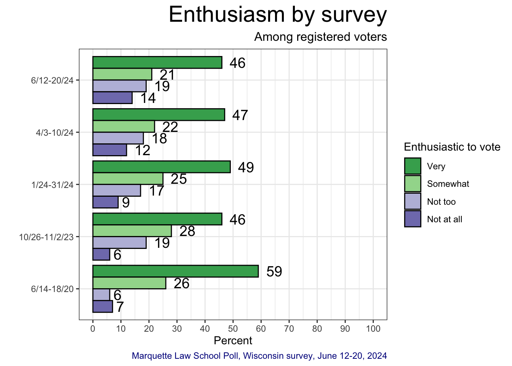
15.2 Vote by enthusiasm
Registered voters who are “very enthusiastic” about voting are much more likely to support Trump than Biden. In contrast those less enthusiastic, whether “somewhat”, “not too” or “not at all” enthusiastic are much more likely to support Biden than Trump.
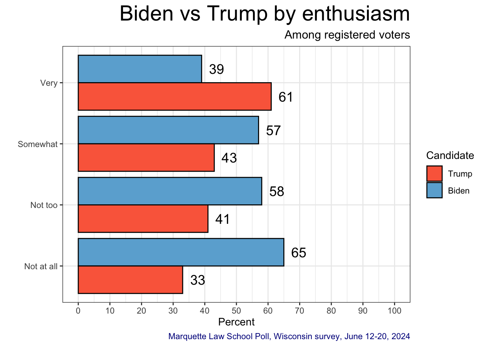
15.3 Certain to vote by enthusiasm
Enthusiasm is related to certainty of voting in November, with those most enthusiastic more likely to say they are absolutely certain to vote, while certainty of voting falls with lower enthusiasm.
Both enthusiasm and certainty of voting are dynamic psychological variables and can change over the course of an election, rather than fixed attributes of people. How this dynamic plays out over the fall campaign can affect races from the top to the bottom of the ballot.
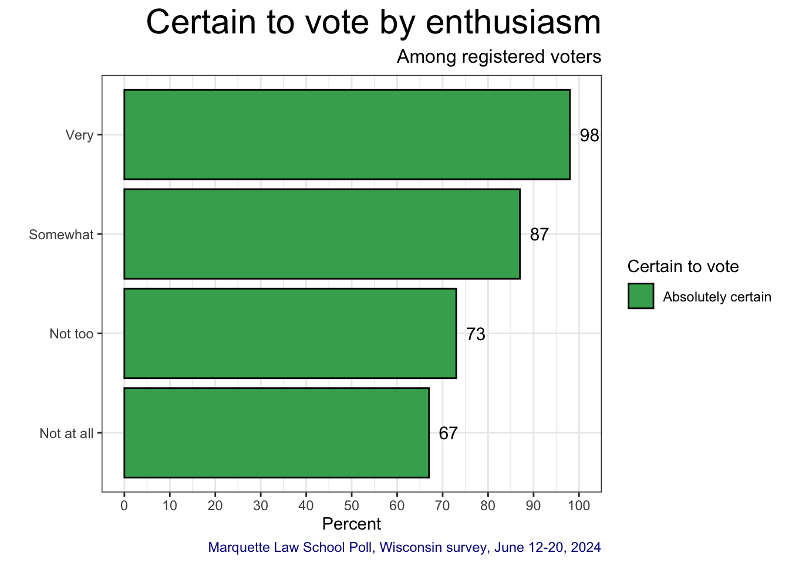